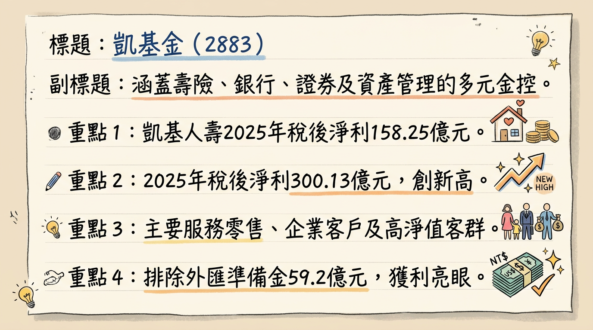
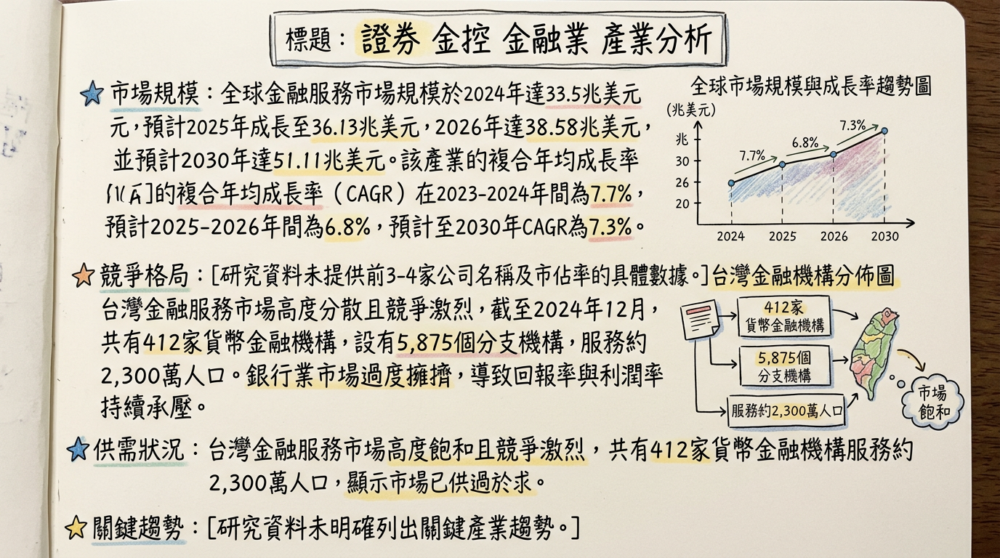
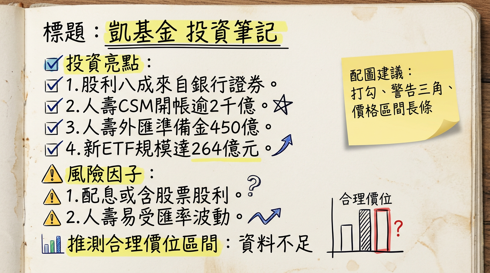

2883 凱基金 深度研究報告
一句話摘要
凱基金控（2883）憑藉「ONE KGI」策略整合發威，2025年獲利創歷史新高，2026年首月獲利更創新猷，集團核心子公司營運動能強勁。公司積極佈局數位轉型與綠色金融，加上具備法人預期5%高殖利率潛力，深受外資青睞，預期未來成長穩健，券商目標價上看23.1元。
公司概覽
凱基金融控股（2883）是一家台灣上市的金融控股公司，業務範疇廣泛，涵蓋壽險、銀行、證券、投信及私募股權／資產管理等多元金融服務。公司總部設於臺北市，並積極拓展海外市場，已在香港及新加坡設有據點，並規劃在中國與東南亞地區擴大佈局。
業務與產品線
- 銀行業務 (凱基銀行)： 提供存款、貸款、信用卡、外匯、企業融資等多元化銀行服務。
- 保險業務 (凱基人壽)： 提供壽險產品，並積極優化產品組合，聚焦美元保單、高保障型及投資型商品。
- 證券業務 (凱基證券)： 提供證券經紀、自營、承銷、財富管理等服務。
- 資產管理 (凱基投信、中華開發資本)： 提供基金管理、私募股權投資及財富管理服務。
稅後淨利貢獻結構
由於金融控股公司營收結構複雜，以下以各子公司對金控的稅後淨利貢獻來呈現其業務比重：
| 子公司名稱 | 2025年稅後純益貢獻 (新臺幣億元) | 2024年稅後淨利貢獻 (新臺幣億元) |
|---|
| 凱基人壽 | 158.25 (註1) | 221.55 |
| 凱基銀行 | 68.03 | 54.57 |
| 凱基證券 | 115.03 | 101.38 |
| 中華開發資本 | 未揭露 | 7.3 |
| 凱基金控總計 | 300.13 (註1) | 335.52 |
註1：凱基人壽2025年稅後純益已扣除提列外匯價格變動準備金59.2億元。排除此一次性影響因素，2025年獲利表現創歷史新高。
核心競爭優勢
「ONE KGI」集團綜效整合： 自2024年金控更名並啟動「ONE KGI」策略以來，集團資源整合成效顯著。2025年已全面拓展至各子公司營業據點，成功提升跨子公司銷售成果，例如凱基證券轉介凱基銀行開戶數成長100%，銀行與證券雙重客戶比率攀升至53%。
多元業務均衡發展： 涵蓋銀行、證券、保險、資產管理，有效分散單一業務風險，並能提供客戶一站式、全方位的金融服務，強化財富管理與資產配置效益。
積極數位轉型與AI應用： 專注於建構AI能力，將AI工具應用於內部以提升生產力，並向外部開展多元商業應用，實現AI與金融業務深度整合，提供更即時、全面的客戶服務。
因應IFRS 17新會計準則的產品策略： 凱基人壽積極優化產品組合，以美元保單、高保障型商品及投資型商品為核心主軸，穩定新契約合約服務邊際（CSM）的累積，為2026年接軌新制做足準備。
海外市場拓展潛力： 凱基銀行香港分行於2025年5月開業，結合集團在香港與新加坡的基礎，加速海外業務拓展，為未來國際化成長奠定基礎。
財務分析
月營收趨勢
| 月份 | 金額 (新臺幣千元) | 月增率 MoM | 年增率 YoY |
|---|
| 2026/01 | 8,752,466 | 49.2% | -4.4% |
| 2025/12 | 5,864,786 | -45.1% | -41.7% |
| 2025/11 | 10,678,590 | -3.8% | 51.6% |
| 2025/10 | 11,105,530 | -22.1% | 149% |
| 2025/09 | 14,263,520 | 65.6% | 42.1% |
| 2025/08 | 8,612,345 | 168.1% | 481.3% |
| 2025/07 | -12,635,850 | -188.4% | -175.2% |
季度數據
| 季度 | EPS (新臺幣元) | 毛利率 (%) | 營業利益率 (%) |
|---|
| 2025年Q3 | 0.8 | 246.72 | 146.13 |
| 2025年Q4 | 未找到 | 未找到 | 未找到 |
年度趨勢
| 年度 | 全年稅後純益 (新臺幣億元) | EPS (新臺幣元) |
|---|
| 2024年 (實際) | 335.52 | 1.97 |
| 2025年 (實際) | 300.13 | 1.74 |
| 2026年 (預估) | 未揭露 | 1.73 (法人預估) |
| | 1.70 (摩根大通) |
法說會重點
凱基金控最近一次公開提及的法說會為 2025年11月。
管理層對各產品線的具體 guidance 與營運表現
- 集團整體： 邁入2026年開春，集團五大子公司馬力全開，2026年1月單月稅後純益衝上56.45億元，若計入FVOCI股票處分利益，調整後獲利高達100.4億元，創單月獲利歷史新高，年成長率飆破170%。展望未來，將持續深化「銀、證、壽」協同合作，強化財富管理與資產配置效益。
- 凱基銀行： 2026年1月稅後獲利8.2億元，年增13%。受惠於放款規模持續擴張及利差走升，淨利息收益穩定成長；財富管理業務手續費收入亦快速成長。規劃申請財管2.0執照及擴編財管團隊。
- 凱基證券： 2026年1月稅後獲利28.18億元，年增300%。台股1月價量齊揚，帶動經紀、財管、自營及承銷業務全面成長。2025年財富管理業務資產管理規模年增33%。
- 凱基人壽： 2026年1月新契約保費收入達97億元，年增65%，創近五年新高，帶動新契約合約服務邊際（CSM）年增13%。2025年12月傳統型外幣保費創年度單月新高，投資型保單持續熱銷，帶動當月新契約保費收入年成長高達八成，累計全年度新契約保費年增率超過三成。預計接軌IFRS 17後，開帳後的合約服務邊際（CSM）可達到2,000億元以上水準，未來每年新增CSM目標數為300億至350億元。
- 股利政策： 2026年股利政策方向將以現金股利為主，不排除搭配股票股利，主要由銀行與證券獲利支撐。
資本支出金額
- 凱基人壽： 於2025年11月20日決議擬發行10年（含）期以上累積次順位公司債，預計發行總額上限為新台幣200億元，以強化財務結構、充實資本。2026年3月5日公告斥資63億元取得桃園市萬坪物流中心不動產。
- 金控整體： 著重於建構AI能力，將AI工具應用於內部以提升生產力，以及開展多元商業應用，實現AI與金融業務深度整合。
券商觀點
目標價與評等
| 券商名 | 目標價 (新臺幣元) | 評等 | 日期 |
|---|
| 摩根大通 (小摩) | 23.1 | 買進 | 2026年2月24日 |
EPS 預估
- 摩根大通 (小摩)： 預估2026年全年EPS為 1.7元。
- 法人預估： 預估2026年全年EPS約 1.73元。大型金控旗下投顧預估2026年稅後EPS約 1.80元。
重大調升/調降評等
- 摩根大通 (小摩)： 於2026年2月24日將凱基金評等調升至「買進」。
財報深度分析
利潤率趨勢
| 季度 | 毛利率 (%) | 營業利益率 (%) | 稅前淨利率 (%) | 稅後淨利率 (%) |
|---|
| 2025年Q3 | 246.72 | 146.13 | 146.13 | 134.89 |
| 2025年Q2 | N/A | N/A | N/A | N/A (常續利益率905.12%) |
| 2025年Q1 | N/A | N/A | 38.14 | 32.08 |
| 2024年Q4 | N/A | N/A | 25.62 | 20.65 |
| 2024年Q3 | N/A | N/A | 59.21 | 49.95 |
| 2024年Q2 | N/A | N/A | 93.54 | 73.89 |
| 2024年Q1 | N/A | N/A | 63.06 | 52.36 |
凱基金的利潤率呈現波動，但整體反映其作為金融控股公司的特性與營運成果。
- 2024年獲利強勁： 合併淨收益達732.88億元，年增85.3%；稅後淨利335.52億元，年增77.13%，為歷史次高（若排除2021年一次性大樓處分利益則為歷史新高）。主要受惠於「ONE KGI策略」發揮綜效，以及凱基人壽投資收益年增26%、凱基證券經紀、自營及承銷業務淨收益年增34%、凱基銀行放款餘額年增19%及手續費淨收益年增43.23%等子公司亮眼表現。
- 2025年受匯率及IFRS17準備金影響： 2025年上半年受新臺幣升值影響人壽獲利，導致稅後淨利僅55億元。全年稅後純益300.13億元，EPS 1.74元，若排除凱基人壽為因應IFRS17一次性提列外匯價格變動準備金59.2億元的影響，2025年獲利實創歷史新高。這項準備金提列導致12月人壽出現小幅虧損，進而影響金控當月及全年獲利表現。
- 2026年展望： 2026年1月在銀行與證券業務動能強勁下，金控調整後獲利高達100.4億元，顯示核心獲利能力已恢復強勁動能。
存貨與營運
凱基金控作為金融控股公司，其業務性質決定了存貨並非主要營運指標。
| 季度 | 存貨週轉天數 | 應收帳款收現天數 |
|---|
| 2025年Q1 | -99999 | -99999 |
| 2024年Q4 | -99999 | -99999 |
| 2024年Q3 | -99999 | -99999 |
| 2024年Q2 | -99999 | -99999 |
| 2024年Q1 | -99999 | -99999 |
資本支出與折舊攤銷
- 資本支出： 凱基金控的資本支出主要體現在對數位化轉型、AI能力建構及營運據點擴展的投資。例如凱基人壽於2025年11月決議擬發行上限200億元的次順位公司債以充實資本，並於2026年3月斥資63億元取得桃園市物流中心不動產。凱基銀行香港分行亦於2025年5月開業。
- 折舊攤銷趨勢：
| 季度 | 折舊 (新臺幣億元) | 攤提 (新臺幣億元) |
|---|
| 2025年Q3 | 8.16 | 3.20 |
| 2025年Q2 | 7.62 | 3.87 |
| 2025年Q1 | 7.36 | 4.18 |
| 2024年Q4 | 6.91 | 4.04 |
| 2024年Q3 | 6.99 | 3.93 |
| 2024年Q2 | 7.01 | 3.84 |
| 2024年Q1 | 7.05 | 3.86 |
折舊費用呈現緩步上升趨勢，可能與營運據點擴展及IT設備更新相關；攤提費用則在2025年Q1後略有下降。
股權異動
近期董監事/大股東申報轉讓
- 2026年2月6日： 經理人洪文昌申報計畫轉讓凱基金股票380張，轉讓期間為2026年2月9日至2026年3月8日。
- 2026年1月30日： 子公司經理人林能顯申報計畫轉讓凱基金股票1,200張，預計於2026年2月2日轉讓。
庫藏股、可轉債、增減資
- 未找到2024-2026年凱基金庫藏股買回、發行可轉換公司債或現金增資/減資的最新紀錄。
股利政策
| 年度 (發放年度) | 現金股利 (新臺幣元) | 股票股利 (新臺幣元) | 殖利率 (預估，%) |
|---|
| 2025年 | 0.85 | 0.1 | - |
| 2024年 | 0.5006 | 0 | - |
| 2026年 (預估) | 0.88 | 未揭露 | 4.6-5.1 |
產業分析
市場規模與供需狀況
- 全球金融服務市場規模： 2024年達到33.5兆美元。預計2025年成長至36.13兆美元，2026年達到38.58兆美元。2023-2024年複合年均成長率（CAGR）為7.7%，2025-2026年預計為6.8%，並在2030年達到51.11兆美元 (CAGR 7.3%)。
- 台灣金融業供需狀況： 台灣金融服務市場高度分散且競爭激烈，截至2024年12月，共有412家貨幣金融機構和5,875個分支機構服務約2,300萬人口，市場已趨於飽和，導致銀行業回報率和利潤率持續承壓。
產業平均利潤率
- 台灣銀行業： 過去十年平均淨利差（NIM）約為1%，平均資產報酬率（ROA）約為0.7% (截至2025年3月)。
- 全球銀行業： 股東權益報酬率（ROE）預計為13.0% (截至2026年2月)。
台灣同業比較
| 公司 | 2025年全年稅後純益/上半年稅後淨利 (新臺幣億元) | 2025年EPS/上半年EPS (新臺幣元) | ROE/ROA (年化稅後，% ) |
|---|
| 凱基金控 (2883) | 300.13 (全年) | 1.74 (全年) | 未揭露 |
| 台灣合作金控 (TCFHC) | 0.65 (上半年) | 7.73 (ROE) / 0.38 (ROA) | |
| 台新金控 (TSFHC) | 102 (上半年) | 0.71 (上半年) | 10.61 (ROE) |
產業趨勢與對凱基金的影響
數位化與金融科技（FinTech）普及：
* 具體影響： 數位化和純數位金融服務的普及是金融服務市場成長主要驅動力。全球數位支付市場交易額預計在2026年達到26.89兆美元。金融科技市場預計在2026年達到4,607.6億美元，2034年達1.76兆美元。
* 機會： 凱基金控可透過投入數位銀行和支付平台、AI驅動的金融諮詢服務，提升客戶體驗和營運效率，拓展數位客群。其多元業務涵蓋銀行、保險、證券，有利於整合資源，提供全方位數位金融解決方案。
* 威脅： 來自非金融科技公司（如大型科技公司）的競爭日益激烈，以及網路安全風險隨數位化程度加深而增加。
人工智慧（AI）應用：
* 具體影響： 金融服務業日益採用AI驅動的金融諮詢服務，AI在風險管理、詐欺檢測、客戶服務和個人化產品推薦方面的應用日益增加。
* 機會： 凱基金控將AI應用於其各業務板塊，例如銀行業務的信用評估、智慧客服；保險業務的保單定價、理賠流程自動化；證券與資產管理的量化交易、智能投顧等，可顯著提升效率與服務品質。
* 威脅： AI技術投資成本高昂，且需持續投入研發與人才培育，若無法有效導入可能造成成本負擔。
綠色金融與永續發展：
* 具體影響： 全球對氣候變遷和永續發展的關注促使綠色金融成為重要趨勢。台灣金管會於2024年10月啟動「綠色金融行動方案」。2024年永續債券發行量創歷史新高達51億美元，累計總額達238億美元。
* 機會： 凱基金控響應政府綠色金融政策，發展ESG相關的金融產品和服務（如綠色債券、永續基金），可吸引對永續投資有興趣的客戶，並提升企業形象。
相關投資題材連結
- AI (人工智慧)： 凱基金控積極建構AI能力，應用於核心金融業務，可優化客戶服務、提升風險管理、精進投資分析等，藉由AI實現營運效率和獲利能力的提升。
- 綠色金融： 凱基金控發展綠色金融產品和服務，包括綠色貸款、綠色債券承銷、永續主題基金等，以支持台灣淨零排放目標，並抓住綠色經濟轉型帶來的投資機會。
近期催化劑
股東會/法說會重要決議
- 2025年12月02日 法說會： 財務長表示2026年股利政策仍以現金股利為主，不排除搭配少量股票股利。凱基人壽持續優化產品組合，核心主軸為美元保單、高保障型商品及投資型商品。預計接軌IFRS 17後，開帳後CSM可達2,000億元以上，每年新增CSM目標數為300億至350億元。
重大合作、接單、新產品發佈
- 2026年02月上旬： 凱基投信推出全台首檔具備「股息自動再投入」機制的「凱基台灣TOP 50 ETF （009816）」，掛牌後連續七個交易日成交量稱冠，基金規模迅速擴大至264億元。
- 2025年12月02日： 凱基金控深化「ONE KGI」跨平台協作，凱基證券轉介凱基銀行開戶數成長率達100%，銀行與證券雙重客戶比率攀升至53%。
- 2025年12月02日： 凱基銀行香港分行成立後逐步擴大規模，結合集團資源推動跨境金融成長。
股利政策
- 2026年02月27日： 市場預期在2025年獲利穩定的前提下，2026年股利發放比率有望維持，對存股族與中長線投資客極具吸引力。
- 2026年01月28日： 法人預估凱基金2025年現金股利0.85元，2026年0.88元，2027年0.93元，殖利率約4.6%至5.1%。
外資/投信近期買賣超張數 (2026年2月至3月5日)
- 2026年03月05日： 外資賣超6,930張，投信買超1,009張。
- 2026年03月04日： 外資賣超26,925張，投信買超2,061張。
- 2026年03月03日： 外資買超20,003張，投信買超1,964張。
- 2026年02月27日： 凱基金獲外資連14買，2月份以來共計敲進42.3萬張。
- 2026年02月24日： 外資大買凱基金8.4萬張，累積過去11個交易日買超超過31萬張。
- 2026年02月份： 外資買盤力道強勁，籌碼集中度提升，由散戶流向大戶與機構法人。
- 2026年全年： 外資買超525,844張，投信賣超17,302張。
⭐ 成長動能時間軸
- 2025年5月： 新市場拓展 - 凱基銀行香港分行開業，結合凱基證券與中華開發資本在香港的營運基礎，加速海外業務拓展。
- 2025年12月起： 集團綜效深化 - 「ONE KGI」策略持續發酵，跨子公司協作效益顯著，例如銀行與證券雙重客戶比率攀升至53%，證券綁定銀行交割戶餘額成長35%。
- 2025年12月起： 壽險產品組合優化 - 凱基人壽因應IFRS 17接軌，聚焦長年期與保障型商品，2025年12月傳統型外幣保費創年度單月新高，累計全年新契約保費年增率超過三成。
- 2026年1月起： 核心業務強勁增長 - 凱基銀行受惠放款規模擴張及利差走升，淨利息收益穩定成長，財富管理業務手續費收入快速成長 (2026年1月稅後獲利8.2億元，年增13%)。凱基證券受台股價量齊揚帶動，經紀、財管、自營及承銷業務全面成長 (2026年1月稅後獲利28.18億元，年增300%)。
- 2026年2月上旬： 新產品上市 - 凱基投信推出全台首檔具備「股息自動再投入」機制的「凱基台灣TOP 50 ETF （009816）」，掛牌後規模迅速擴大至264億元。
- 2026年3月5日： 資產佈局 - 凱基人壽斥資63億元取得桃園市萬坪物流中心不動產，強化長期資產配置。
- 2026年全年： IFRS 17接軌與CSM累積 - 凱基人壽預計每年新增CSM目標數為300億至350億元，長期將穩定貢獻獲利。
- 2026年全年： 數位與AI能力建構 - 金控持續專注建構AI能力，應用於內部提升生產力及外部開展多元商業應用，提升集團整體競爭力與服務效率。
2026 展望
成長動能
「ONE KGI」策略全面發威： 隨著策略持續深化，集團內銀行、證券、壽險子公司間的跨售合作將進一步提升客戶滲透率與貢獻度，實現更顯著的獲利綜效。
核心業務動能強勁： 凱基銀行受惠於放款擴張與利差走升，淨利息收益穩定；凱基證券在台股交投熱絡下，經紀、自營及財管業務有望持續增長。
壽險業務結構優化： 凱基人壽聚焦美元保單及保障型商品，有助於穩定新契約CSM累積，並降低匯率波動影響，為接軌IFRS 17後創造長期穩定的獲利基礎。
數位與AI應用提升效率： 積極佈局AI與數位轉型，有助於優化營運流程、降低成本、提升客戶體驗及拓展新商業模式。
高殖利率吸引法人買盤： 市場預期2026年股利政策具吸引力，高殖利率有望持續吸引中長線資金及外資投入，支撐股價表現。
風險
總體經濟及地緣政治不確定性： 全球經濟成長趨勢減弱，以及美國聯準會降息不如預期，皆為潛在下行風險。中東地緣政治衝突演變亦可能對全球金融市場產生衝擊。
匯率波動風險： 壽險子公司凱基人壽易受新臺幣兌美元匯率波動影響，若新臺幣急劇升值，可能產生巨額匯兌損失，進而拖累金控整體獲利。
資本市場評價壓力： 中華開發資本的獲利表現受到亞太資本市場評價壓力影響，若市場波動加劇，可能影響其投資收益。
市場競爭激烈： 台灣金融市場高度飽和且競爭激烈，可能持續壓縮利潤空間。
股價短期技術性修正風險： 凱基金近期股價漲幅已大，需留意乖離率過大後可能出現的技術性修正，以及外資買盤延續性與量能能否維持，以防範短線獲利了結賣壓。
投資結論
凱基金控在2026年展現強勁的成長動能，特別是在「ONE KGI」策略整合效益、核心子公司獲利表現優異，以及積極佈局數位轉型和綠色金融等面向。考量其穩健的財務體質與法人預期的股利殖利率，我們對其長期投資價值持樂觀態度。
獲利動能回歸強勁： 2025年雖受匯率及IFRS17準備金影響，但若排除一次性因素，獲利已創歷史新高。2026年1月集團獲利表現亮眼，證券與銀行業務動能爆發，顯示金控已重回成長軌道。
集團綜效持續發酵： 「ONE KGI」策略的全面落地，將進一步深化跨子公司合作，提升客戶黏著度與貢獻，為金控長期穩定獲利奠定基礎。
高殖利率提供下檔保護： 法人預估2026年現金股利有望達0.88元，殖利率上看4.6%至5.1%，對長期存股族具吸引力，提供股價一定的下檔保護。
市場資金青睞： 凱基金在2026年2月獲外資連續買超逾42萬張，顯示機構法人對其成長潛力與股利政策的肯定，有利於股價維持強勢。
目標價區間建議： 綜合考量其穩健的獲利成長、集團綜效、高殖利率潛力及法人評價，我們建議投資人可考慮在股價回檔至合理區間後分批佈局。鑑於摩根大通目標價為23.1元，我們建議長期投資目標價區間為 新臺幣 22.5元 至 24.5元。
本報告由 AI 自動產生，資料來源為公開網路資訊，僅供參考，不構成投資建議。產生時間：2026-03-06 14:01
📊 資訊卡


